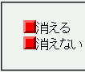
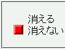

リストアイテム要素開始タグの直後に空白類文字があり、さらにその直後にブロック要素（ul, olなど、一部を除く）の開始タグがある場合、そのリストアイテムの画像リストマーカーが消えてしまうことがある。
<ul style="list-style:url('img02.png') circle;">
<li>
<div>消える</div></li>
<li><div>消えない</div></li>
</ul>
2つのリストアイテムがあります。前者が、バグが発生するような場合の例です。li要素開始タグの直後で改行をしています。
WinIE6.0標準モード
Netscape7.1標準モード
HTTPを通して文書を開いた場合に発生するバグです。ローカルファイルを直接開いた場合には発生しないようです。